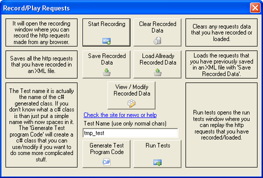
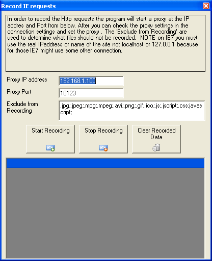
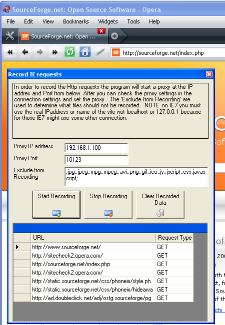

How to Record Requests
After you start the application you will first see the window below.
Press the Start Recording button which will open the recording window.
In this window the application will try to autodedect your computer settings and will choose by default the default proxy port 10123 which you can change if you want to. If the program didn't detected your IP address propperly you can change it.
After you have finished configuring the IP address and the port number push the "Start Recording" button. When you push the button the internal proxy server will be started. In order to actually record your browsing actions you have to start your browser and set the proxy setting with the IP address and port configured above. If you don't know how to set the proxy settings there are a few hints for IE here, for Firefox here and for for Opera here. After you have set the proxy settings in your browser you can start browsing and the proxy will record the request that your browser makes. If you receive a message like this Could not connect to proxy server. Access denied than the proxy might not be running try pushing "Start Recording" again and reopen the page or the proxy configuration from your web browser doesn't match the recorder proxy configuration, please check them to see if they match. When you browse your first page you should see something like this in the recorder.
After you have finished recording your actions push the stop button and close the window and don't forget to put your old setting in your web browser proxy setting because when you stop the recorder the proxy will be shut down and you will not be able to see any web page.